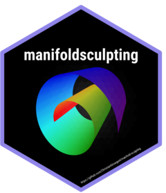

manifoldsculpting: Nonlinear Dimensionality Reduction by Manifold Sculpting
Source:R/manifoldsculpting-package.R
manifoldsculpting-package.RdManifold Sculpting (Gashler, Ventura and Martinez (2008) https://proceedings.neurips.cc/paper/2007/hash/c06d06da9666a219db15cf575aff2824-Abstract.html) is an iterative nonlinear dimensionality reduction method. It records the distances and angles between each point and its nearest neighbors, then gradually scales the data out of the dimensions to be removed while moving the points in the remaining dimensions to restore these local relationships, as if surface tension were acting on the manifold. New samples are embedded by solving the same local problem against the training embedding. The neighbor search and the sculpting iterations are written in C++ with 'RcppArmadillo', and step_manifold_sculpting() makes the method available as a 'recipes' preprocessing step for 'tidymodels' workflows.
Author
Maintainer: Christian L. Goueguel christian.goueguel@gmail.com
Authors:
Christian L. Goueguel christian.goueguel@gmail.com